Mobile work item details
The work item page (stories, bugs, action items, Features and Epics) inside the touch shell at 900px and below: section chips to get around, fields as tiles, pickers as bottom sheets, a Save bar while something is unsaved, and stacked rows instead of tables. Above 900px nothing changes. Design agreed on 7 Nov 2026; nothing is built yet.
- In: the work item page and its item modal (?item=KEY): header, fields, description, criteria and repro steps, tasks, Stories and bugs, retrospective rows, discussion and log, links, attachments, history, the Feature status band and Goal.
- Out: the frame around it (SHIP-713), the attachment viewer (SHIP-715), the retrospective page (SHIP-729), and how boards and backlogs open the modal (SHIP-716–722).
- Where it lives: design/screens/item-touch.css and item-touch.js, loaded by work-item.html and feature.html.
Today on a phone
The real app at 390px (main at 918cf067, from its page-screenshot fixtures).
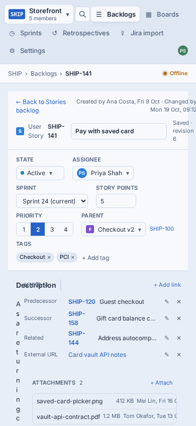
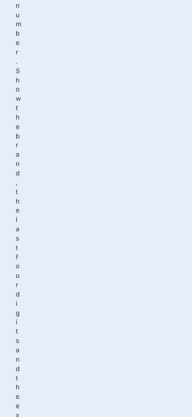
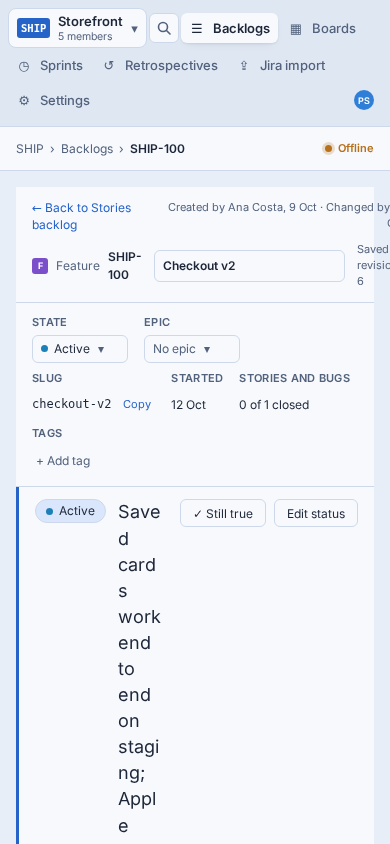
- The rail never stacks. WorkItemForm lays out its body as grid-cols-[minmax(0,1fr)_20rem] with no breakpoint, so the 20rem rail keeps its width and the main column shrinks to a letter.
- The Feature form does the same. Its status band wraps one word a line and its field strip is cut off.
- Everything is sized for a mouse. 28px controls, ✕ and ⋯ that only show on hover, menus anchored under 120px fields.
- Save is at the top of a very long page. Edit something in Tasks and Save is thousands of pixels away.
Proposed: try it
Pick a state to see it. To use it for real, open the live screen (the reference screen in ../screens/) in a window narrower than 900px, or in the browser’s device mode.
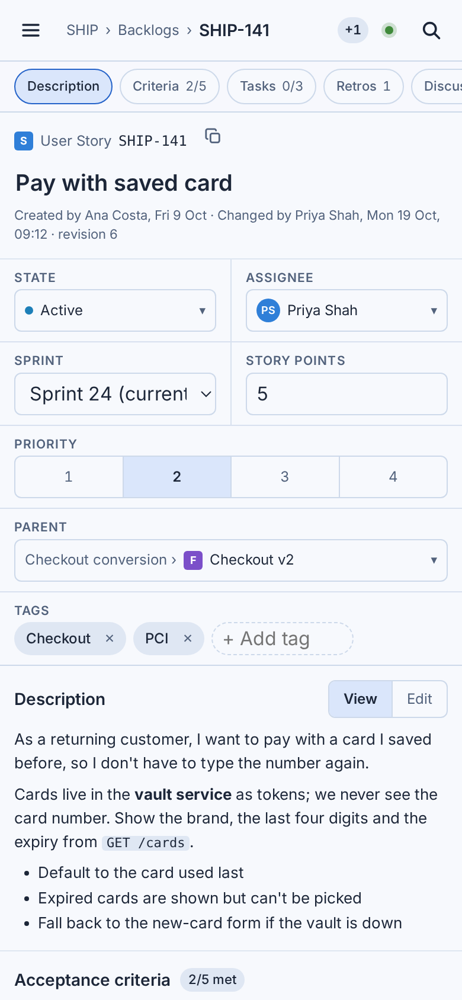
Review states on the live screens: ?at=<section>, ?open=state|assignee|parent, ?dirty, ?conflict, ?mention, ?peek, plus each screen’s own (?key=SHIP-153, ?key=SHIP-188, ?band=edit).
Every state, side by side
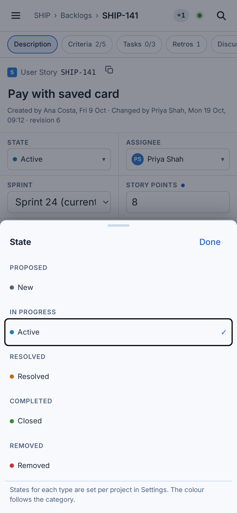
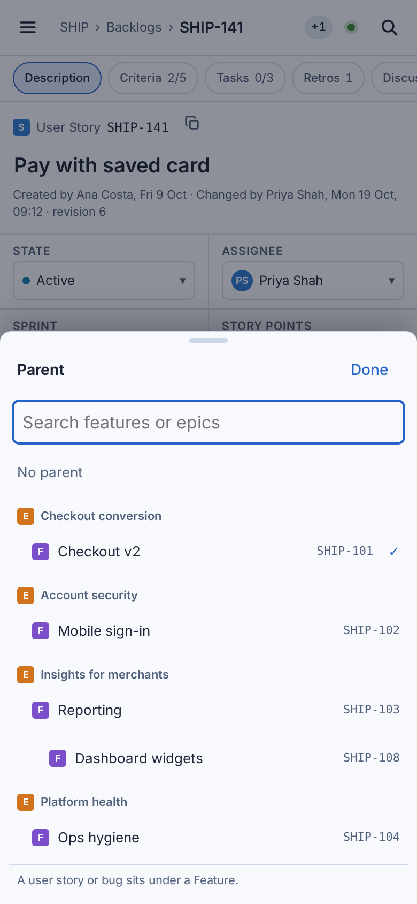
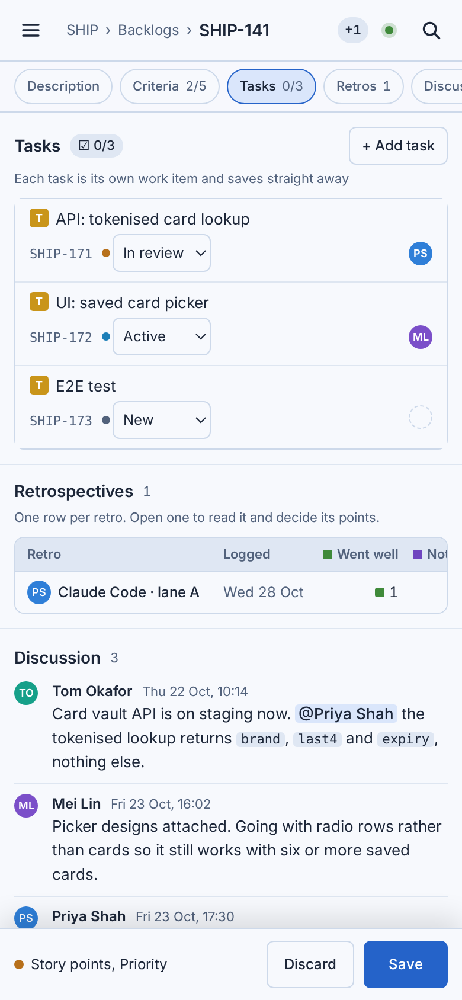
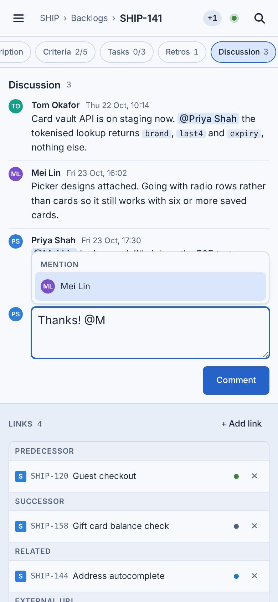
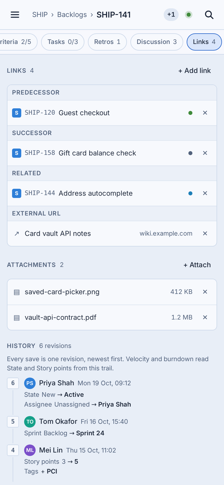
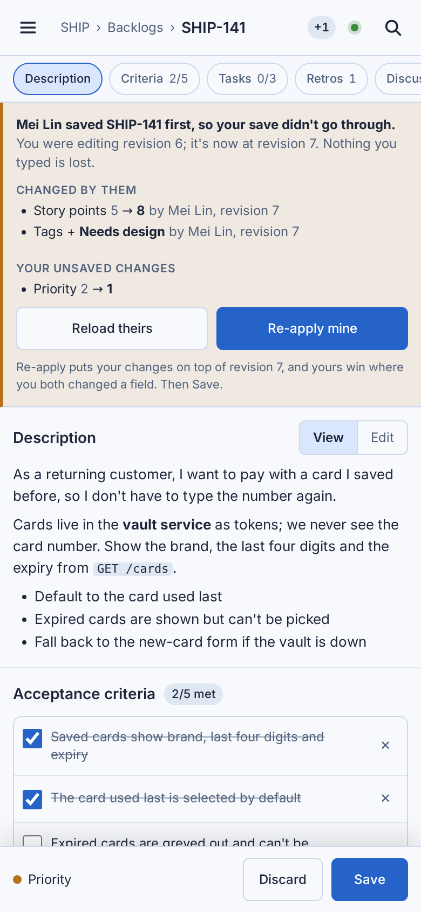
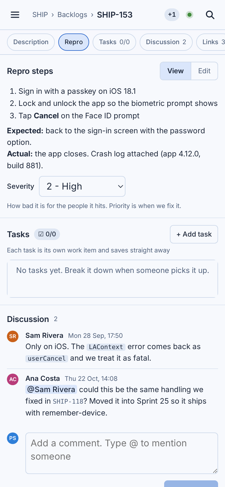
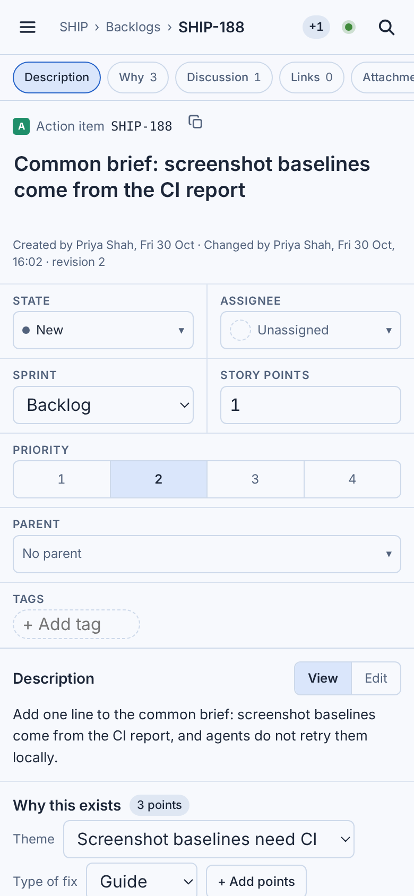
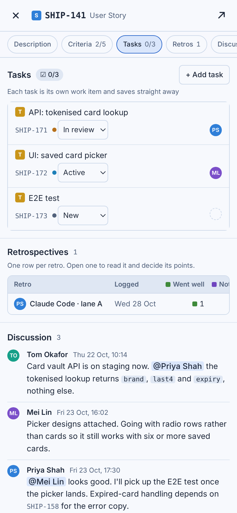
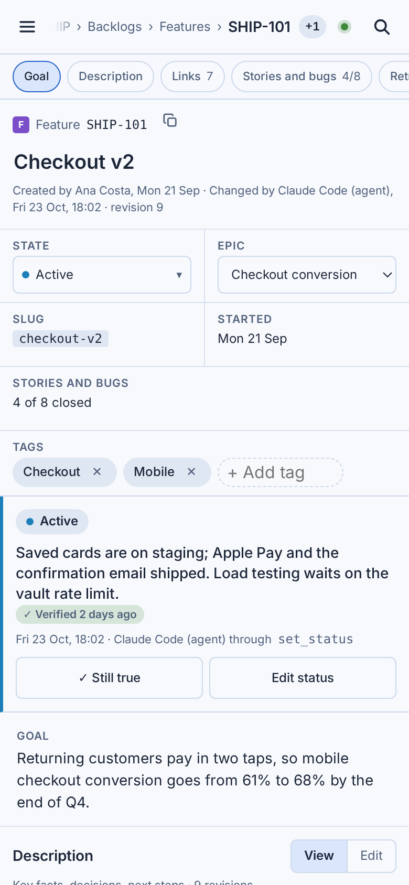
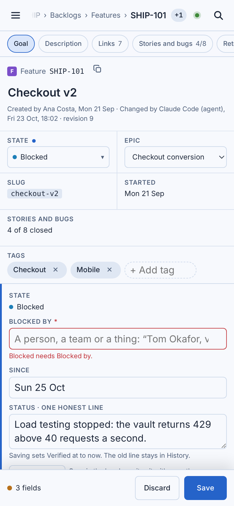
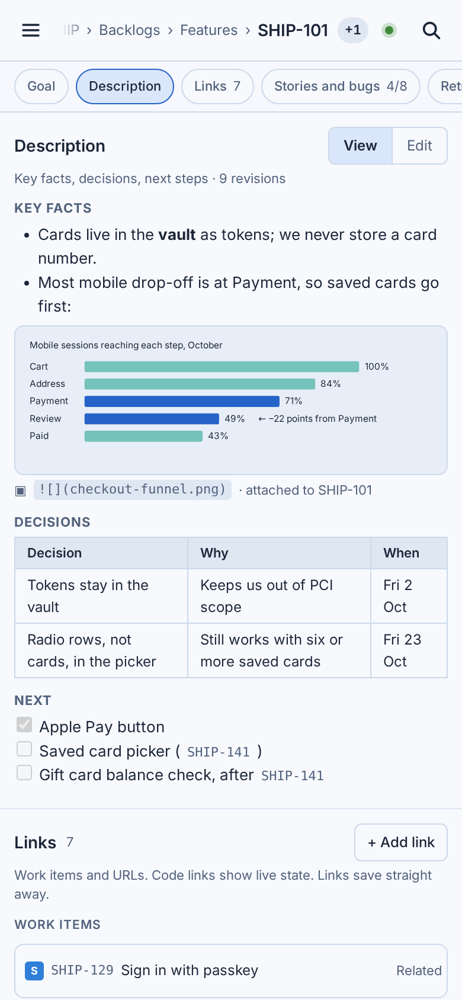
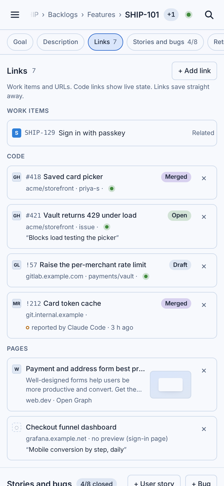
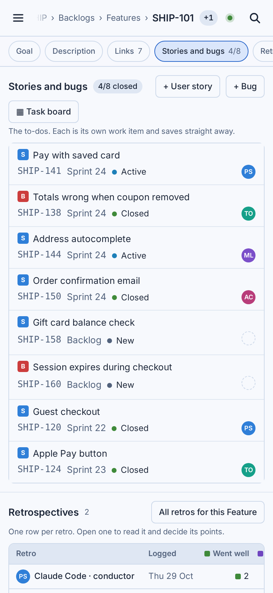
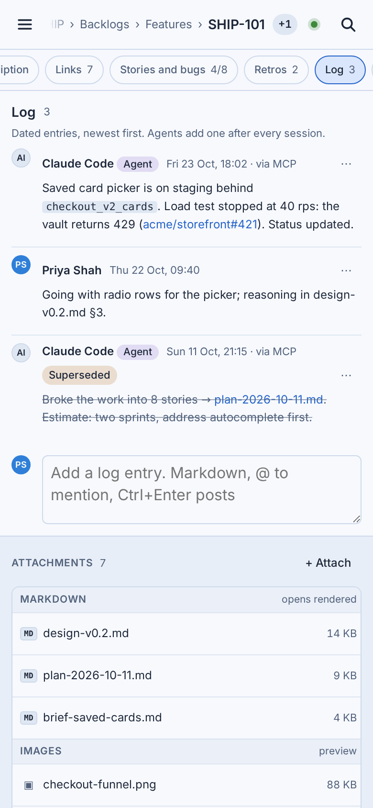
What changes at 900px and below
The rules item-touch.css and item-touch.js apply, written as requirements for the app.
| Area | Desktop today | 900px and below |
|---|---|---|
| Layout | Main column + 20rem rail side by side | One column: main sections, then Links, Attachments, History. |
| Top bar | Side menu, breadcrumbs, ← Back, Save in the header | The shell’s bar (SHIP-713): Menu, crumbs ending in the key, presence, Live, Search. ← Back is dropped; the crumbs and the system back do that. |
| Finding your way | Everything visible at once | Section chips stick under the bar (Description, Criteria 2/5, Tasks 0/3, Discussion 3, Links 4…). The one on screen is highlighted; tapping one scrolls to it. |
| Title | One-line input | Type and key with a copy button above it; the title wraps at 19px semibold; Enter finishes; the created/changed line under it. |
| Fields | One strip of cells | Two-column tiles. Story: State | Assignee, Sprint | Story points, then Priority, Parent and Tags on rows of their own. Feature: State | Epic, Slug | Started, Stories and bugs, Tags. Inputs at 16px. |
| Pickers | Menus under the field | Bottom sheets over the shell’s scrim with its sheet header and Done, 44px rows, the same groups and footnotes; Parent keeps its search. Sprint, Epic, Severity and task State stay native selects. |
| Saving | Save and Discard in the header | A Save bar fixed to the bottom while something is unsaved, naming the fields. A 409 scrolls to the banner, whose buttons go full width. |
| Tables | Tasks and Stories and bugs as table rows | Stacked rows: icon and title on top, then key, sprint, state and person. The Retrospectives rows scroll sideways. |
| Touch | 28px controls; ✕ and ⋯ on hover | 36px controls, 32px icon buttons, 44px rows; nothing needs hover. |
| Long content | Wide images and tables fit | Images and SVGs shrink to the column; Markdown tables scroll inside the description; every section grid is minmax(0, 1fr). |
| Discussion and Log | Composer with keyboard hints | Bigger box, hints hidden, 40px Comment; the @mention list opens above the box. |
| History | Every revision | The newest three, then Show all N revisions. |
| Feature status band | One row | Stacked: the state chip, the status line, Verified, then Still true and Edit status as two 40px buttons. The editor is one column. |
| Links (Feature) | Cards two across | One column of cards; the PR state stays on the title line; ✕ in the corner. |
| Item modal | A centred dialog over the board | Full screen over the shell: Close, the item, Open full page. |
| Attach | + Attach, drop files, paste images | + Attach opens the phone’s picker (camera and photos included); no drop overlay on touch. |
Decisions
Settled by Joel on 7 Nov 2026: eleven recommendations kept, one changed. The screens and images show the settled answers.
| # | Question | Answer | |
|---|---|---|---|
| D1 | Breakpoints | One breakpoint: the whole layout at 900px and below, as the shell. Tablets get it too. | Changed (recommended: rail stacks at 900px, phone layout at 640px) |
| D2 | Getting around a long page | Sticky section chips | As recommended |
| D3 | Saving | A Save bar at the bottom while something is unsaved | As recommended |
| D4 | Field pickers | Bottom sheets for State, Assignee and Parent; Sprint, Epic, Severity and task State stay native selects | As recommended |
| D5 | The fields block | Always open, two-column tiles | As recommended |
| D6 | Remove on touch | ✕ and ⋯ always visible | As recommended |
| D7 | History | The newest three, then Show all | As recommended |
| D8 | Item modal on a phone | Full screen, with Close and Open full page | As recommended |
| D9 | Touch sizes | 36px controls, 32px icon buttons, --touch-target rows and sheet options, at 900px and below only | As recommended |
| D10 | Section order | As on a desktop: main sections, then Links, Attachments, History | As recommended |
| D11 | Retrospective rows on the item | Scroll sideways for now; SHIP-729 redesigns them | As recommended |
| D12 | Measuring phone use | A viewport class header (phone, tablet, desktop) from the SPA, stamped on every web event, built in SHIP-713 | As recommended |
Acceptance criteria
The same as SHIP-714’s checklist.
- At 390 × 844 the story, bug, action item, Feature and Epic pages have no horizontal scroll at any point, in both themes; only Markdown tables and the Retrospectives rows scroll sideways, inside their own box.
- At 900px and below (phones, tablets and narrow windows alike) the side rail stacks under the main column and the phone layout applies: section chips, field tiles, bottom sheets, Save bar. Above 900px nothing changes.
- Every field can be read and changed on a phone: title, State, Assignee, Sprint, Story points, Priority, Parent, Tags, Severity, Epic, the description and repro steps, criteria, the status band (including Blocked by and Parked reason) and Goal.
- Tasks, Stories and bugs, Discussion, Log, Links, Attachments, History and Retrospectives are all reachable from the section chips, and the chip for the section on screen is highlighted.
- Unsaved changes show the Save bar with the changed fields named; Save writes one revision as on desktop; a 409 brings the conflict banner into view with Reload theirs and Re-apply mine.
- Every tappable control is at least 32px, list rows and sheet options at least 44px, and nothing needs hover (remove and ⋯ always visible).
- The item modal (?item=KEY) opens full screen at 900px and below, with Close and Open full page.
- Page screenshots at 390 × 844 in both themes for work-item, work-item-bug, work-item-action, feature and feature-status-edit, next to the existing 1440 × 900 ones; the reference screens in design/screens carry the phone layer (item-touch.css, item-touch.js).
- Web events say whether they came from a phone, tablet or desktop (the viewport header from SHIP-713, D12), so edits and comments per item view can be compared week by week, phone against desktop.